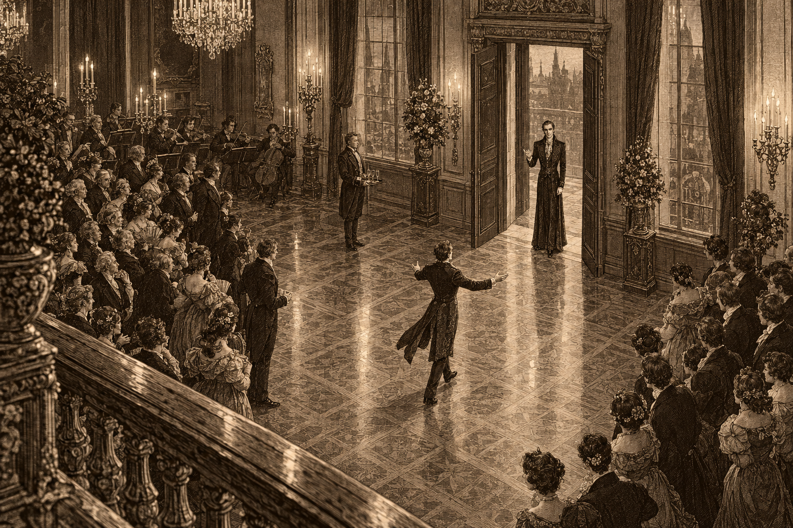
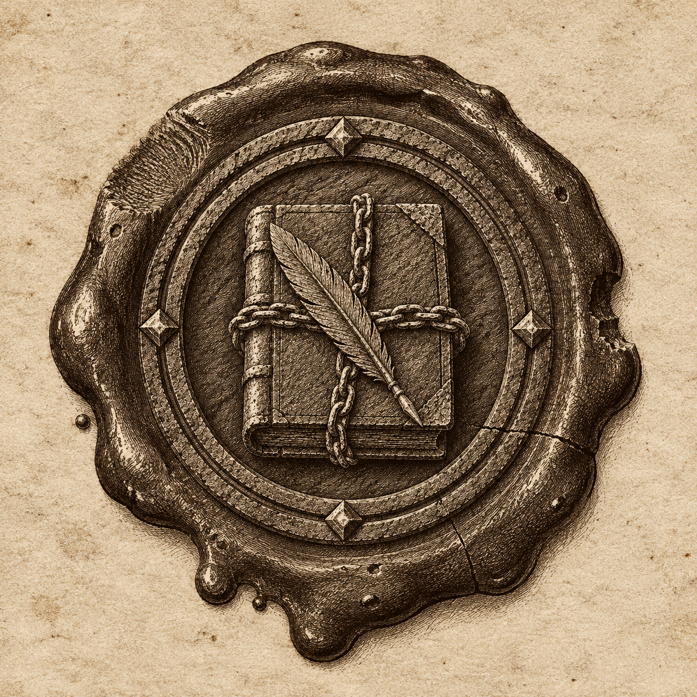

Lord Scurlock arrives at the Dalmorrian house.
After the month this city has had, I confess I went to the Dalmorrians’ on Saturday hoping for nothing more than good wine and a little scandal. I got both.
Lord Schieven Dalmorrian opened his house to half of Brightstone to announce the engagement of his son, Master Alaric Dalmorrian, to Miss Anya Quellin. The Quellins arrived in force. A match between one of the city’s oldest names and one of its fastest-rising will be the talk of every drawing room this season, and the old families are already counting generations on their fingers.
But the talk of the night was a guest nobody expected. Lord Scurlock, of a house most of us had long assumed closed, arrived dressed as though fashion had stopped to wait for him, and raised a glass from a bottle bearing an old Dalmorre crest to toast “re-initiating good relations between House Scurlock and Dalmorre.” The old families watched him the way a cat watches a stranger. The younger ones could not stop looking.
Elsewhere, Mr. Jared Dalmorrian held the household staff spellbound in the kitchen with stories and a bottle he had not been asked to open. And a very large guest, on the wrong end of a hand of cards, solved the problem by overturning the table, then soothed the gentlemen he had ruined by promising them an audience with Lord Schieven “on Master Alaric’s behalf.” I look forward to that meeting.
Not everything was warm. Early in the evening Lord Schieven withdrew to his office with his son and his brother, and the three came out some time later with the particular stiffness of men who have agreed to stop arguing until the guests are gone. Lord Schieven smiled for the rest of the night. Master Alaric did not. Mr. Jared seemed not to have noticed anything was wrong at all.
The servants, meanwhile, have a story of their own. Several swear that during the evening a great bird, an eagle, they insist, and no crow, came down out of the dark into the yard behind their quarters, looked them over, and went away again. Eagles are not common in Brightstone. Neither are servants who drink from the master’s cellar, and I leave readers to weigh the evidence.
The next morning, the Spirit Wardens called. They were perfectly polite. They asked after anything unusual, walked the grounds, looked at the canal behind the house for rather a long time, and left having found nothing at all. Nobody at the house can tell me what they were looking for. The Wardens declined to comment.
All in all, a triumph. The couple handsome, the wine excellent, the gossip better, and House Scurlock is, it seems, back in society. Whatever comes of that, I intend to be invited.

The seal in question. Have you seen it?
Readers may remember the Valchek warehouse that burned in Charhollow, and Miss Marla Vale, the House’s Charter Steward, who has pursued its insurers without mercy ever since. She is pursuing something else now.
In the course of her inquiries, Miss Vale has come upon an old document bearing a seal she does not recognize: a ring, and within it a closed book bound in chains and crossed by a quill. House Valchek has kept the city’s deeds and charters for centuries, and there is not much Miss Vale does not recognize. “I have never seen it before,” she told me. “That alone is worth remarking on.”
She asks that anyone holding papers that bear this seal, however old or damaged, bring them forward. Items that prove genuine will be paid for. Why it matters, she would not say, and I am not sure she knows. “My House exists to preserve such things,” she said. “Somebody went to a great deal of trouble to seal these. I intend to find out why.”
Inquiries to the Valchek offices, or to this paper.